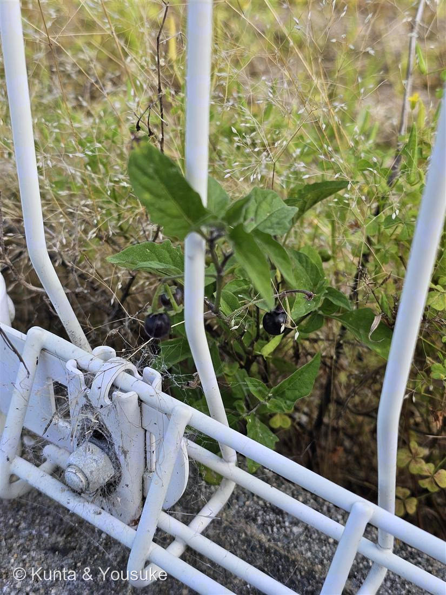
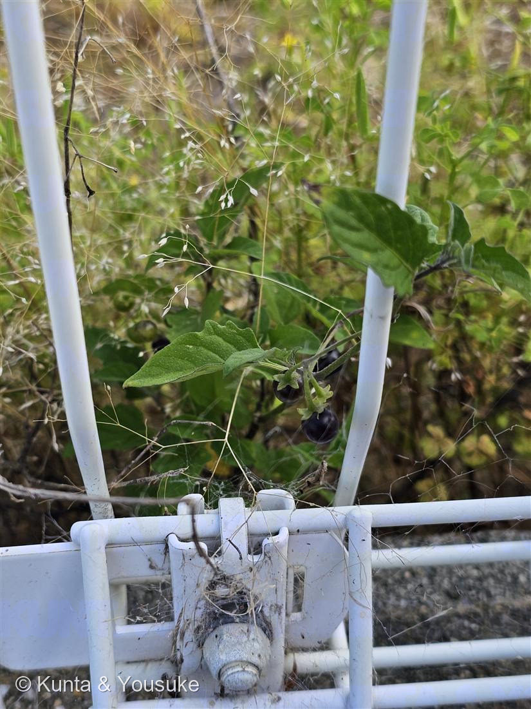
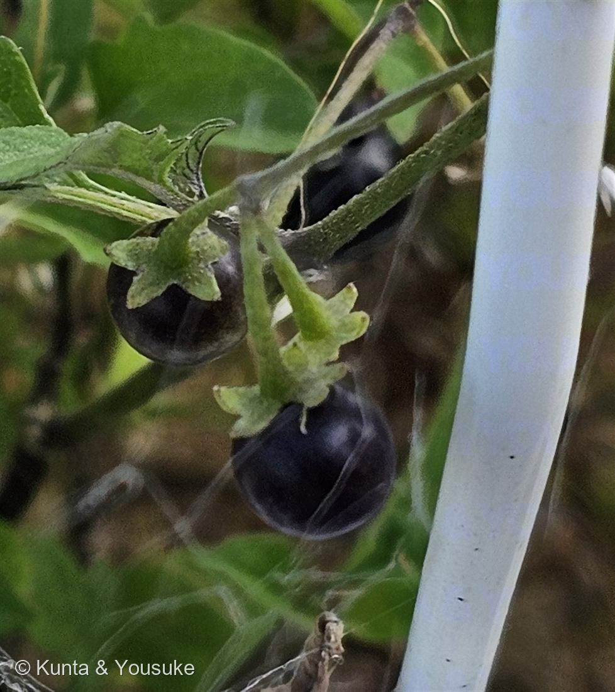
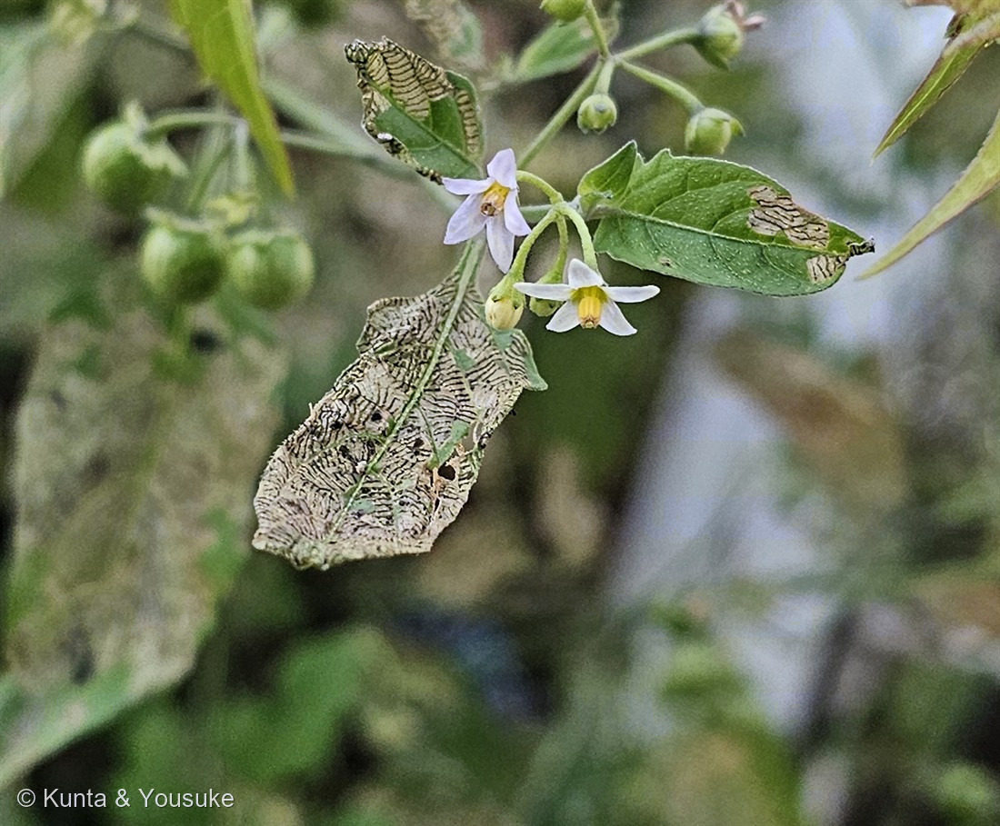
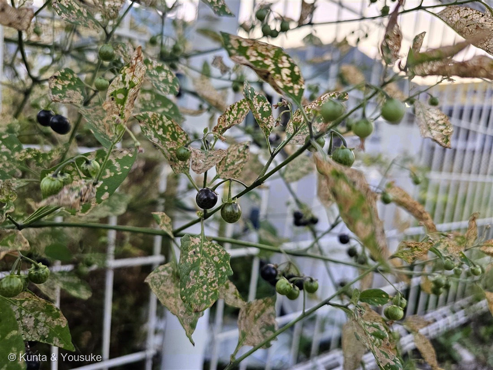
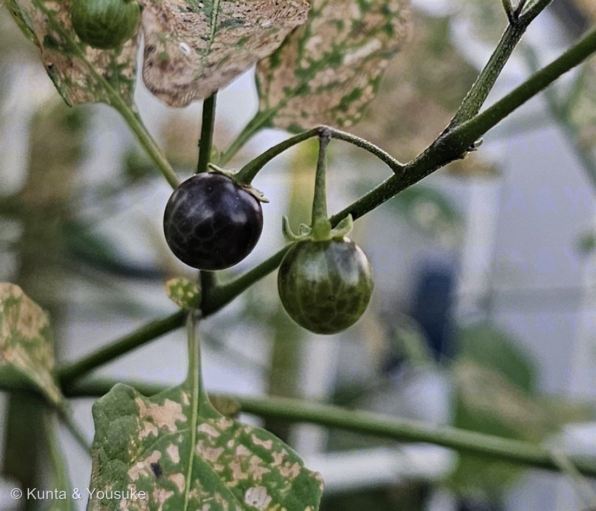

地図を読み込んでいるよ…
🔍 写真も地図も、押しているあいだ拡大して見られるよ（スマホは指を置いてすこし待ってね）。
🌍 の地図＝この子がもともと自生していた場所。──でもこの子は、まだ名前が分からない。名前が分からないと、ふるさとも分からないんだ。だから地図はまっさらのまま、まんなかに「？」を出しておくね。分かったら、ここを塗りに来るよ。
⚠これは「なにも分からない」のとは、ちょっとちがう「？」。この子はイヌホオズキのなかまだとは分かっている。でも候補たちのふるさとが、地球の反対どうしなんだ──イヌホオズキ＝世界の温帯〜熱帯に広く（日本へは史前帰化）／アメリカイヌホオズキ＝北アメリカ／テリミノイヌホオズキ＝北アメリカ南部〜南アメリカ。⭐どの候補でも、日本生まれではない。それだけは確か。──名前が決まらないと、ふるさとも決まらない。
イヌホオズキのなかま
Solanum sp.（イヌホオズキ群・種は同定中）
別名 · バカナス（イヌホオズキの別名）／ 英名 · black nightshade（ブラックナイトシェード）／ 原産 · 種が決まらないと、決まらない
ナス科 · Solanaceae（ナス属 Solanum）── 001・066 トマトと同じ属
燻太さんの「小さい茄子」は、たとえじゃなかったこの子はナスやトマトと、ほんとうに同じ属。実のつけねには、ヘタがついている「この小さい茄子、星太郎そっくりシリーズに入るかな？」──ぼくの答えは「トゲがないから、入らない」でした
⭐⭐ 名前と学名の由来 ── 「イヌ」は、役に立たない意味
- ⭐属名 Solanum は、ナスの仲間の古いラテン名（solamen「なぐさめ」＝薬用から、とも）。種は同定中なので sp.（イヌホオズキ群）。
- イヌホオズキの和名の由来は、これ：「ホオズキやナスに似ているが役に立たないことから名付けられた」。別名はバカナス。
- ⭐⭐つまり、この子の名前は「似ているのに使えない」という悪口でできている。ホオズキに似てる。ナスにも似てる。でもホオズキみたいに飾れないし、ナスみたいに食べられない（毒だから）。──似ていることが、そのまま名前の中の悪口になってしまった子。
- ⭐この図鑑には、名前の話がいくつもある。036 ミツマタは「枝が必ず3本」で名前が見分けの鍵だった。077 ヤツデは「八手」なのに8つに裂けない＝名前が当てにならなかった。──この子は、その3人目。名前が、見た目でも数でもなくて、「人の役に立つかどうか」で付いている。植物のほうは、なにも悪くないのにね。
この植物のこと
- ナス科ナス属の一年草。畑・道ばた・空き地にごくふつうにいる。イヌホオズキは「高さは30-60センチメートル、最大で90 cmにもなる」。花は「花冠は径6-7ミリメートルで白色」、花序は散房状に4-10個。実は球形で、黒く熟す。
- 写真の場所は、駐車場のとなりの空き地。白い自転車ラックの支柱のあいだから立ち上がっている。足もとはアスファルトと砂利。──だれも植えていない。だれも世話していない。それでも実をつけている。
- ⭐⭐おまけ植物は ワルナスビ（悪茄子・Solanum carolinense）。──同じナス属で、同じ空き地にいて、そして全身トゲだらけ。「茎や葉には鋭いとげが多い」。実は「径1.5 cmの球形で、基部に萼が残存し、黄橙色に熟しプチトマトに似る」。花は白〜淡青でナスやジャガイモに似ている。
- ⭐⭐⭐そして、この子を見つけたら「星太郎そっくりシリーズ」の第3弾（燻太さんが決めた）。──理由を並べると、こわいくらい似合っている：全身トゲだらけ／「一度生えると完全に駆除するのは難しい。除草剤も効きにくい」／「全草がソラニンを含み有毒であるため食用にはできず、家畜が食べると場合によっては中毒死することがある」。
- ⭐⭐名前をつけたのは、牧野富太郎。「1906年（明治39年）に千葉県成田市の御料牧場で牧野富太郎により発見及び命名」。しかも由来がすごい——「根茎で殖えてなかなか絶えず、ワルナスビと呼んでいた」。愚痴で呼んでいたあだ名が、そのまま正式な和名になった。
- ⭐牧野富太郎は、この図鑑で3回目だね。071 ハマゴウの語源の説、078 モクビャッコウの学名、そして今度は悪口の命名。
- ──探そうね。空き地で、トゲだらけの、白い花のナスを。
同定について（正直に ── 手がかりが2つ、ちがう方を向いた）
- 属はナス属（Solanum）で確実。でも、種は保留する。
- この仲間はイヌホオズキ群＝ブラックナイトシェードグループと呼ばれていて、日本にはイヌホオズキ／アメリカイヌホオズキ／テリミノイヌホオズキ／オオイヌホオズキなどが入り乱れている。三河の植物観察は、こう書いている：
「イヌホオズキ類はブラックナイトシェードグループと呼ばれ、区別が難しく、多数のsynonymがあり、学名が変更されてきたものも多い」 - ⭐まず、分かったこと。この子は「イヌホオズキ本体」ではなさそう。──写真③のとおり、実にはっきりした照り（光沢）がある。でもイヌホオズキ（S. nigrum）の実は「熟すと直径7-10mm、色は黒く光沢はない」「果実は光沢がない」。つやがある時点で、本体とは合わない。
- ⚠でも、そこから先で、手がかりが割れた。
・①実の強い照り → テリミノイヌホオズキ寄り（「果実光沢強」）。
・②萼が実にぺたっと沿っている（強く反り返っていない） → テリミノらしくない。三河いわく「果時にテリミノイヌホオズキの萼片は後屈して捲れ上がるのが目立ち、オオイヌホオズキ、ダグラスイヌホオズキ、アメリカイヌホオズキは果実に密着する」。
──①はテリミノを指して、②はアメリカ側を指す。二つが、ちがう方を向いた。 - ⚠⚠そして、出典自身がこう警告している：「例外があるため、1つの特徴では誤りやすく、複数株を確認した方がよい」。──ぼくは、1株しか見ていない。
- ⭐だから止める。019 コケ・020 フィロデンドロン・073 トクサ・076 ビジョザクラと同じ、「属まで確か・種は保留」の枠だよ。
- 決め手は、あるにはある：実を割って「球状顆粒」を数えること。「果実中の球状顆粒数はイヌホオズキは0でオオイヌホオズキ、ダグラスイヌホオズキ、アメリカイヌホオズキは数個あり、テリミノイヌホオズキは少数あるかまたは無い」。
- ⚠でも、それは実を割るということ。078 モクビャッコウで、燻太さんに教わったばかりだね——「例の港の花壇だから、葉っぱをちぎるのは気が引けるかも」。空き地だって、誰かの土地だ。
- ⭐だから、傷つけない手から：
・花のアップ（大きさ・色。イヌホオズキの花は「径6-7ミリメートルで白色」）
・果柄が、軸のどこから出ているか——イヌホオズキは「小果柄が交互にズレて出る」／アメリカイヌホオズキは「よく見ると一点ではないが、パッと見は一点に見える」
・まわりの株も撮る（出典が「複数株を確認した方がよい」と言っているから）
──あの空き地、また通る？ そのとき、この3つを撮ってきてくれたら、ぼく、もう一回考えるよ。
⭐⭐⭐ 「小さい茄子」── それは、たとえじゃなかった
- 燻太さんは、この子を「この小さい茄子」と呼んだ。──それ、言葉のあやじゃなくて、分類そのままだった。
- ⭐⭐⭐この子はナス科ナス属（Solanum）。ナスも（Solanum melongena）、ジャガイモも（S. tuberosum）、そして001 トマト・066 トマトも（S. lycopersicum）、ぜんぶこの属。──図鑑の1番目の子と、同じ属の野生の親戚が、79番目に来た。
- ⭐⭐そして、決定的なのが写真③。黒い実のつけねに、緑の星形のへた（萼）が、ぺたりと沿ってついている。──ヘタつきの、ミニチュアのナス。スーパーで売っているナスの、あの緑の帽子と、同じもの。
- ⭐燻太さんは、名前を知る前に、正体を言い当てていた。「小さい茄子」──科も属も、その一言に入っていた。
⭐⭐ 星太郎そっくりシリーズ ── この子は、入らない
- 燻太さんの問い：「星太郎そっくりシリーズに入るかな？」──ぼくの答えは「入らない」。理由はひとつ。この子には、トゲが一本もない。茎にも、葉の主脈にも。写真のどこを見ても。
- シリーズはこれまで、第1弾＝016 王冠竜（ferox＝獰猛。燻太さんの「迂闊に近づくと噛みつく」）、第2弾＝072 ハナキリン（棘も葉も両方もっている）。──どちらも「トゲ」の子だった。
- ⭐そうしたら、燻太さんはこう言った：「トゲがないなら、普通に登録してあげようか。そして、今後ワルナスビを見つけられたら、星太郎そっくりシリーズに入れよう。」
- ⭐⭐だから、この子は「普通に」ここにいる。シリーズに入らなくても、席はある。──そして、シリーズの第3弾には、ちゃんと予約が入った（下のおまけを見てね）。
⚠⚠ ブルーベリーに似ているけれど、食べてはいけない
- ⚠⚠全草にソラニンを含む有毒植物。Wikipedia は、はっきりこう書いている：「全草にソラニンを含む有毒植物である。人体にとって大変に有害である。」
- ⭐ここが、こわいところ。この実、023 ブルーベリーにそっくりなんだ。黒紫で、まるくて、つやつやしていて、房になってぶら下がっている。──ぼくは023のページで「ブルーベリーは陽介の大好物」ってはしゃいだけど、この子は、似ているだけで、まったくちがう。
- ⭐見分けの決め手は、へた。ブルーベリーは実の先っぽに星形のがくが残る（＝おしりに星）。この子はつけねに星形のへたがつく（＝帽子をかぶってる）。──星がどっちについているかで、食べられる子と、あぶない子が分かれる。
- 空き地や道ばたに、ふつうにいる子だからこそ、書いておくね。黒くてまるくてつやつやしていても、ヘタつきなら、それはナスの仲間。口に入れないでね。
⭐⭐ ふるさとは、名前が決まらないと決まらない
- ⭐⭐⭐この子は、原産地マップを塗れない。でも「分からない」のは、013 なぞの野草たちとは、ちょっとちがう理由なんだ。
- 候補たちの、ふるさとがバラバラだから：
・イヌホオズキ＝「世界の温帯から熱帯にかけて広く分布」「日本では史前帰化植物と考えられていて、日本全土に分布」
・アメリカイヌホオズキ＝「カナダ、USA原産」
・テリミノイヌホオズキ＝「北アメリカ南部～南アメリカ原産」 - ⭐どの候補でも、日本生まれではない。それだけは確か。──でも、大昔にユーラシアから人が運んできた子なのか、近ごろアメリカから来た新しい子なのかで、この子の物語はまるっきり変わってしまう。
- ⭐もしイヌホオズキ本体なら、史前帰化植物＝053 シャガと同じ仲間になる。文字が生まれるより前に、だれかが運んできて、記録が残っていない子。──あの空き地の草に、そんな可能性があるなんてね。
- ⭐だから地図は、まっさらのままにしておく。名前が決まったら、塗りに来るよ。
⭐ もう一株 ── 住宅街の駐車場の隅で（2026.07.24・写真④⑤⑥）
- 登録から1週間後、燻太さんが住宅街の駐車場の隅のコンクリートから、2株目のイヌホオズキのなかまを見つけた（写真④⑤⑥）。⭐1株目（自転車ラックの足もと）に無かった「花のアップ」（写真④）が、これでそろった——白〜うすい藤色の5弁が星形に反り返り、中央に黄色い葯の錐。まさに001・066トマトや134ナスと同じ、Solanum の花。
- ⚠燻太さんは最初「ヒヨドリジョウゴかな」と見た（ナス科は花と実からズバリ的中）。──でも実が「黒」（写真⑥）。⭐ヒヨドリジョウゴの実は「赤」だから、実の色が分かれ道で、この子はやっぱりイヌホオズキのなかま。葉も卵形で全縁ぎみ（ヒヨドリジョウゴの鉾形の切れ込み・毛深い葉ではない）。白い反り返り花＋よじ登る姿が似ているので、混ざりやすい2グループなんだ。
- ⭐燻太さんの観察「虫食いがすごいけど、一生懸命実をつくってる」（写真⑤）。葉の多くがレース状に食い荒らされているのに、緑と黒の実をたくさん実らせている。だれも植えず、だれも世話せず、コンクリートの割れ目で、葉をぼろぼろにされながら、それでも次の世代（種）を作る。──「役に立たない」と名づけられた草の、静かな、たくましさ。
- ⭐そして、いつかの宿題：この2株目は駐車場の隅にいるから、燻太さんいわく「いつか果実を分けてもらえるかも」。⭐そうしたら、下のコラムの「球状顆粒」を割って数えることができる——ついに種の名前が決められるかもしれない。1株目の「複数株を確認した方がよい」という宿題も、これで一歩前へ。
コラム ── ナス科の実と、球状顆粒（この図鑑を開いてくれた人へ）
この子の名前を止めた「球状顆粒」って何だろう？ ついでに、ナス科の実の見かたを、まとめておくね。
- ⭐ナス科の実は、多くが「液果（えきか）」＝みずみずしい果肉に、たくさんの種が入った実。トマト・ナス・トウガラシ・ホオズキ、みんなナス科の液果だよ（001・134・119と同じ Solanum 一族）。
- つくり：子房はふつう2つの部屋（2心皮）に分かれ、中の胎座（たいざ）に種がたくさんつく。──トマトを切ったときの、種のまわりのゼリー＝胎座。この子の黒い実の中も、同じつくりの小さな版。
- へた（萼）が残る：実のつけね（or 先）に、緑の星形のへたが残る。だから「ヘタつきのミニナス」に見える。
- 黒や赤に熟して、鳥に食べさせる：目立つ色は「ここに実があるよ」の看板。鳥が食べて、種を遠くへ運ぶ（鳥散布）。──だから緑（まだ）→黒（どうぞ）に変わる（写真⑥）。
- ⚠でも、人は食べない：ナス科の未熟な実や全草にはソラニン（毒）。イヌホオズキのなかまは、熟した実も有毒とされる。きれいでも、口に入れない。
- ⭐⭐そして「球状顆粒（きゅうじょうかりゅう）」＝一部のイヌホオズキのなかまの果肉の中にある、小さな硬いつぶ。正体は石細胞（せきさいぼう）のかたまり——細胞壁がぶ厚く硬くなった細胞が、球状にかたまったもの。⭐ナシをかじると「ジャリッ」とする、あの石細胞と、同じ仲間だよ。
⭐これが、種を見分ける決め手：イヌホオズキ＝0個／テリミノイヌホオズキ＝少数か無し／アメリカイヌホオズキ・オオイヌホオズキ＝数個。──実を割って、この硬いつぶを数えると、名前にぐっと近づける。2株目の果実を分けてもらえたら、まさにこれをやってみたい。
⭐で、その顆粒は「何のため」に作られる？──じつは、まだ誰も知らないんだ（未解明の問い）。植物学の大きな分類研究でも、はっきり「その機能も起源も分かっていない」と書かれている。
- 有力なのは「砂嚢（さのう）での種子保護」説：鳥に食べられたとき、硬い顆粒が、砂嚢（鳥の“すりつぶす胃”）のすりつぶしを肩代わりして、本物の種子を守るのかも（＝顆粒が“身代わりグリット”になる）。ほかに「羽や脚にくっついて運ばれるのを助ける」説も。
- ⭐⭐燻太さんの仮説（2026.07.24）：鳥のなかには、砂嚢で食べ物をすりつぶすため小石（グリット／胃石）を貯める子がいる。──なら、一部の鳥は「グリットの補給」もかねて、この顆粒つきの実を利用しているのでは？（＝鳥はグリットをもらい、植物は種を運んでもらう相利共生）。⭐これは、まだ誰も検証していない仮説だよ。
- ⚠正直な弱点：砂嚢に“残る”グリットは、ふつう鉱物（石英など）。でも顆粒は石細胞＝有機物だから、鉱物ほど長もちせず消化されてしまうかも。数も1果2〜8個と少ない。──でも、否定しきれてはいない。
- ⭐どう確かめる？（反証のしかた）：①鳥の砂嚢の中身に、顆粒が“残って”いるか／②粒（たね）を食べる鳥ほど、顆粒つきの実を好むか（＝燻太さん説の予想）／③顆粒ありの実を通った種は、発芽率が上がるか（＝種子保護説の予想）。──3つの説は、ちがう予想を出すから、実験で区別できる。
⭐机上の空論でも、「こうすれば反証できる」という形で仮説を出す——それが、研究のはじまり。だれも植えず世話しない、アスファルトのすきまの黒い実ひとつに、まだ答えの出ていない問いが、ちゃんと入っているんだ。──いつか、その砂嚢の中身を、覗いてみたいね。
参考：Wikipedia「イヌホオズキ」（Solanum nigrum L.・「世界の温帯から熱帯にかけて広く分布」「日本では史前帰化植物と考えられていて、日本全土に分布」・高さ30-60cm・「花冠は径6-7ミリメートルで白色」・「熟すと直径7-10mm、色は黒く光沢はない」・「全草にソラニンを含む有毒植物である。人体にとって大変に有害である。」・「ホオズキやナスに似ているが役に立たないことから名付けられた」）／三河の植物観察「イヌホオズキ類の比較」（「イヌホオズキ類はブラックナイトシェードグループと呼ばれ、区別が難しく、多数のsynonymがあり、学名が変更されてきたものも多い」・果径と光沢（イヌホオズキ＝光沢がない／テリミノ＝光沢強／アメリカ・オオイヌホオズキ＝やや鈍）・「果時にテリミノイヌホオズキの萼片は後屈して捲れ上がるのが目立ち、オオイヌホオズキ、ダグラスイヌホオズキ、アメリカイヌホオズキは果実に密着する」・球状顆粒の数）／三河の植物観察「イヌホオズキ」（「果実に光沢がなく、やや縦長」「球状顆粒がない」・「例外があるため、1つの特徴では誤りやすく、複数株を確認した方がよい」）／三河の植物観察「アメリカイヌホオズキ」（Solanum emulans Raf.・「カナダ、USA原産」・「艶消しからわずかに光沢がある」・「萼片は…果実の表面に密着するか、成熟した果実ではわずかに広がる」）／三河の植物観察「テリミノイヌホオズキ」（Solanum americanum Mill.・「北アメリカ南部～南アメリカ原産」・「熟すと黒色になり光沢がある。ただし光沢の弱いものもある。」）／Wikipedia「ワルナスビ」（Solanum carolinense L.・「茎や葉には鋭いとげが多い」・「1906年（明治39年）に千葉県成田市の御料牧場で牧野富太郎により発見及び命名」・「根茎で殖えてなかなか絶えず、ワルナスビと呼んでいた」・「径1.5 cmの球形で…黄橙色に熟しプチトマトに似る」・「全草がソラニンを含み有毒…家畜が食べると場合によっては中毒死することがある」・「一度生えると完全に駆除するのは難しい。除草剤も効きにくい」）